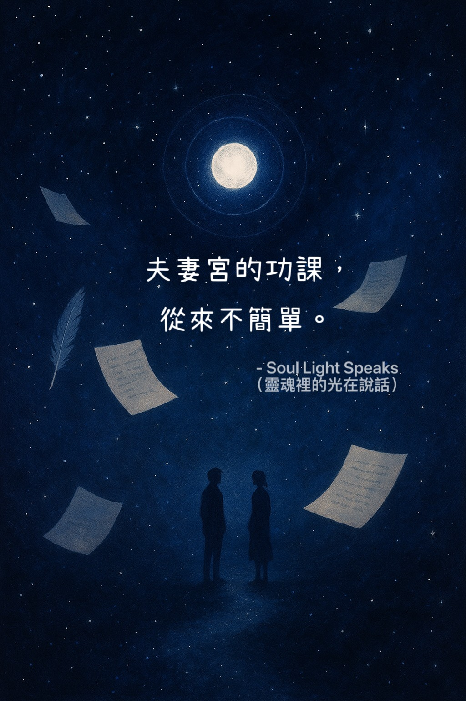
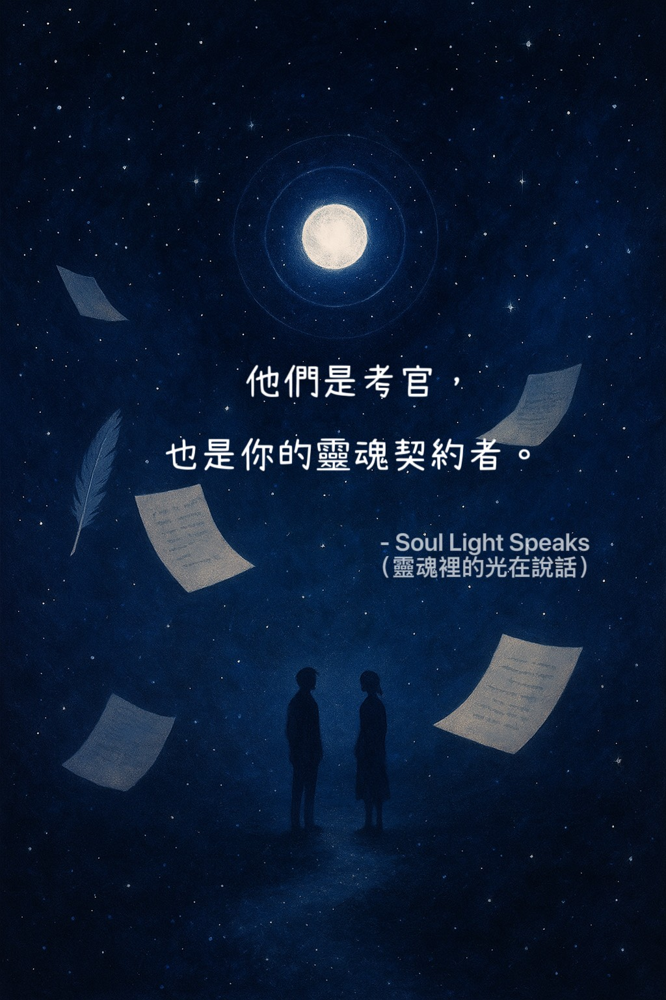

Caption 1

Caption 2

Caption 3

Caption 4

Caption 5

Caption 6
Some people don’t appear by chance —
they are soul exams.
Some are the A-paper/B-paper type:
miss A, and the universe sends you B —
same vibration, different face — a chance to retake.
Others are main-character questions:
they appear only once in a lifetime.
Fail them, and the lesson carries into the next life.
The lessons of the Spouse Palace
are often a mix of both.
Some people are rehearsers,
some are destined co-learners.
Be grateful for every encounter —
they are both examiners and fellow souls bound by contract.